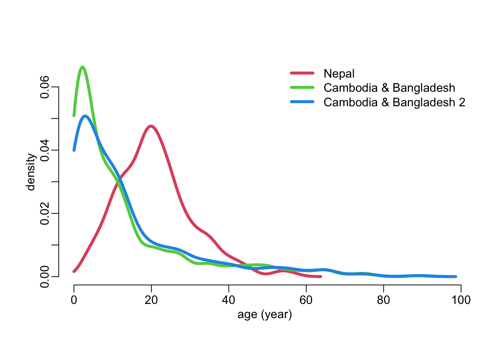

data_path <- paste0("/Users/MarcChoisy/Library/CloudStorage/",
"OneDrive-OxfordUniversityClinicalResearchUnit/",
"GitHub/choisy/typhoid/")Training and testing
Parameters
The path to the data folder:
Packages
The required packages:
required_packages <- c("dplyr", "purrr", "rsample", "yardstick", "recipes", "themis",
"parsnip", "workflows", "tune", "dials", "finetune")Making sure that the required packages are installed:
to_ins <- required_packages[! required_packages %in% installed.packages()[, "Package"]]
if (length(to_ins)) install.packages(to_ins)
rm(required_packages, to_ins)Loading some of these packages:
library(dplyr)
library(purrr)
library(rsample)
library(recipes)
library(themis)
library(parsnip)
library(workflows)
library(tune)
#library(yardstick)
#library(dials)
#library(finetune)Utilitary functions
collect_metrics2 <- function(...) {
collect_metrics(...) |>
filter(.metric == "roc_auc") |>
select(-.config, -.estimator)
}Reading the clean data
The data sets:
nepal <- paste0(data_path, "clean_data/nepal.rds") |>
readRDS() |>
mutate(across(c(cough, diarrhea, vomiting, abdominal_pain, constipation, headache),
as.logical),
across(c(age, platelets), as.numeric))cambodia_bangladesh <- readRDS(paste0(data_path, "clean_data/cambodia_bangladesh.rds"))Comparing the two data sets
show_positive_only <- function(x) x[x > 0]nrow(nepal)[1] 603nrow(na.exclude(nepal))[1] 593nrow(cambodia_bangladesh)[1] 565nrow(na.exclude(cambodia_bangladesh))[1] 545nepal |>
map_int(~ sum(is.na(.x))) |>
show_positive_only() age platelets
2 8 cambodia_bangladesh |>
map_int(~ sum(is.na(.x))) |>
show_positive_only() WBC platelets ALT
3 4 17 nepal |>
pull(fever) |>
min()[1] 3cambodia_bangladesh |>
pull(fever) |>
min()[1] 0cambodia_bangladesh2 <- filter(cambodia_bangladesh, fever > 2)
nrow(cambodia_bangladesh2)[1] 399table(nepal$culture)
FALSE TRUE
429 174 table(cambodia_bangladesh2$culture)
FALSE TRUE
366 33 lwd_val <- 4
densities <- map_dfr(list(nepal, cambodia_bangladesh, cambodia_bangladesh2),
~ pull(.x, age) |>
density(from = 0, na.rm = TRUE) |>
with(tibble(x, y)), .id = "dataset")
with(densities, plot(x, y, type = "n", xlab = "age (year)", ylab = "density"))
densities |>
mutate(color = as.numeric(dataset) + 1) |>
group_by(dataset) |>
group_walk(~ with(.x, lines(x, y, col = color, lwd = lwd_val)))
legend("topright", c("Nepal", "Cambodia & Bangladesh", "Cambodia & Bangladesh 2"),
col = 2:4, lwd = lwd_val, bty = "n")
Preprocessing the Cambodia and Bangladesh data
cambodia_bangladesh2 <- cambodia_bangladesh |>
select(-country) |>
na.exclude() |>
mutate(across(where(is.ordered), as.integer))
nepal2 <- nepal |>
select(-starts_with("score")) |>
na.exclude() |>
mutate(across(where(is.ordered), as.integer))
combined_data <- bind_rows(cambodia_bangladesh2, nepal2)
ind <- list(analysis = seq(nrow(cambodia_bangladesh2)),
assessment = nrow(cambodia_bangladesh2) + seq(nrow(nepal2)))
splits <- make_splits(ind, combined_data)
training_data <- training(splits)
testing_data <- testing(splits)
rm(cambodia_bangladesh2, nepal2)Random forest
#set.seed(456)
#set.seed(3010)
#set.seed(1976)
common_processing <- function(x) {
x |>
na.exclude() |>
mutate(across(where(is.ordered), as.integer)) #|>
# select(culture, IgM, fever, WBC)
# select(culture, IgM, fever, WBC, ALT, pulse, temperature, CRP)
# select(culture, IgM, age, fever, WBC, ALT, pulse, temperature, CRP, diarrhea, headache)
# select(culture, cough, diarrhea, vomiting, abdominal_pain, constipation, headache)
# select(is.logical)
}
cambodia_bangladesh2 <- cambodia_bangladesh |>
select(-country) |>
common_processing()
nepal2 <- nepal |>
select(-starts_with("score")) |>
common_processing()
splits <- make_splits(list(analysis = seq(nrow(cambodia_bangladesh2)),
assessment = nrow(cambodia_bangladesh2) + seq(nrow(nepal2))),
bind_rows(cambodia_bangladesh2, nepal2))
training_data <- training(splits)
cv_folds <- vfold_cv(training_data, strata = culture)
recipe0 <- recipe(culture ~ ., training_data) |>
step_bin2factor(where(is.logical)) |>
step_smotenc(culture)
rf_default <- rand_forest("classification", mtry = 4, trees = 1000, min_n = 15) |>
# set_engine("ranger", importance = "permutation")
set_engine("randomForest")
rf_default_workflow <- workflow(recipe0, rf_default)
rf_default_workflow |>
fit_resamples(cv_folds) |>
collect_metrics2()# A tibble: 1 × 4
.metric mean n std_err
<chr> <dbl> <int> <dbl>
1 roc_auc 0.870 10 0.0770rf_default_workflow |>
last_fit(splits) |>
collect_metrics2()# A tibble: 1 × 2
.metric .estimate
<chr> <dbl>
1 roc_auc 0.783#######################################################################################
if (FALSE) {
fitted_model <- fit(rf_default_workflow, training_data)
fitted_model |>
extract_fit_parsnip() |>
vip::vip()
}